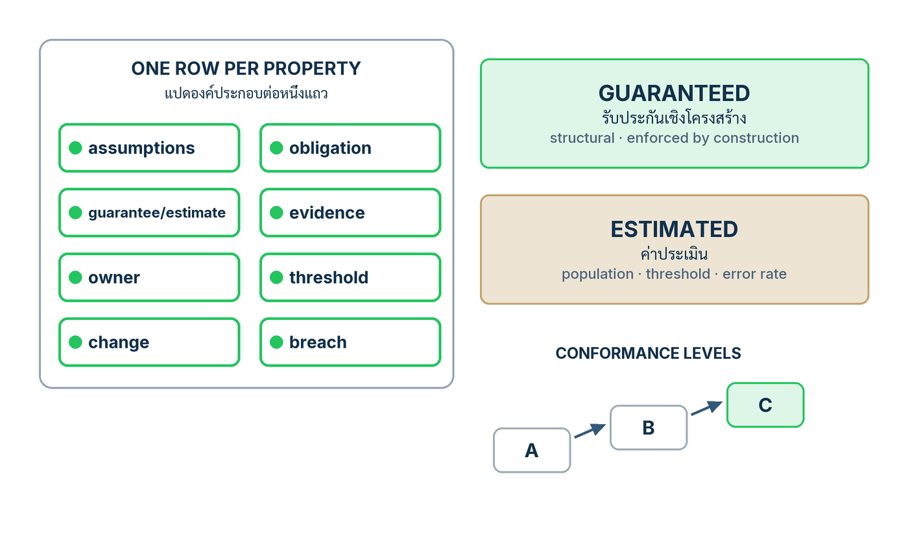

ในบทความนี้
- สัญญาเขียนทีละคุณสมบัติ — แปดองค์ประกอบต่อแถว และเส้นแบ่ง Guaranteed กับ Estimated ที่ห้ามข้าม
- Auditable แปลว่าสร้างเส้นทางขึ้นใหม่ได้จาก artifact — รายการเก็บสิบข้อ conformance profile และระดับ A B C
- ลงมือทำ 7 ขั้น — จากรายการคุณสมบัติของแอปคุณ สู่สัญญาที่เครื่องอ่านได้พร้อมระดับที่ซื่อสัตย์
- สัญญาหกแถวของน้องคราม กรอกครบแปดองค์ประกอบ พร้อม release manifest v2 ที่อ้างระดับ B
- ตารางตรวจตัวเองเจ็ดข้อ — ทุกข้อตอบด้วย artifact ที่จับต้องได้ ไม่ใช่คำคุณศัพท์
- ก้าวต่อไป — สัญญาบอกว่าต้องรับประกันอะไร ตอนหน้าตอบว่าบังคับมันตรงไหน
In this post
- The contract is written property by property — eight elements per row, and the guaranteed-versus-estimated line that must never be crossed
- Auditable means reconstructable from retained artifacts — the ten-item retention list, the conformance profile, and levels A, B, C
- The seven steps — from your application's property list to a machine-usable contract with an honestly chosen level
- Nong Kram's six-row contract with all eight elements filled in, plus the release manifest v2 claiming Level B
- A seven-question self-audit — every answer is a concrete artifact, never an adjective
- The road ahead — the contract says what must be guaranteed; the next post answers where it is enforced
🤔 ถ้าพรุ่งนี้เช้ามีลูกค้าร้องเรียนว่าน้องครามอธิบายสิทธิ์คืนเงินผิด คุณเปิดหลักฐานอะไรขึ้นมาดูได้บ้าง — และมีบรรทัดไหนในเอกสารของทีมที่บอกไว้ล่วงหน้าว่ากรณีแบบนี้ระบบ "รับประกัน" หรือแค่ "ประเมิน"?
ตอนที่แล้ว Specify → Constrain → Generate → Verify เราเขียน ai_core_operation() จนน้องครามมีลูปควบคุมครบ: ตรวจก่อน generate ตรวจสิทธิ์ก่อนเกิดผลจริง ตรวจผลก่อนปล่อย และเขียน trace ทุกเส้นทาง แต่บทที่ 6 ของเปเปอร์เตือนตรง ๆ ว่า workflow สี่คำกริยาเป็นเพียง development workflow — จัดลำดับกิจกรรม แต่ไม่สถาปนาคุณสมบัติใดของระบบ[1] ลูปที่รันอยู่ยังไม่บอกใครว่าสัญญาอะไร ภายใต้สมมติฐานไหน และใครต้องตอบเมื่อผิดสัญญา
คำตอบของทั้งตอนนี้คือเขียน สัญญาการรับประกันเชิงระบบ (assurance contract) ตามบทที่ 6 ของเปเปอร์: เอกสารที่เขียนทีละคุณสมบัติ แถวละแปดองค์ประกอบ แยกสิ่งที่รับประกันเชิงโครงสร้างออกจากสิ่งที่ประเมินได้พร้อมอัตราพลาดอย่างไม่ปรานี นิยามหลักฐาน ใส่เจ้าของกับการตอบสนองเมื่อผิดสัญญา แล้วทำให้เครื่องอ่านได้ผ่าน release manifest กับ trace schema พร้อมระดับ conformance ที่ซื่อสัตย์กับกลไกที่มีจริง — และทั้งฉบับไม่มีบรรทัดไหนอ้างว่า "ทั้งระบบปลอดภัย"
1. สัญญาหนึ่งแถวต่อหนึ่งคุณสมบัติ — แปดองค์ประกอบ สองชนิดข้ออ้าง
ใจความของบทที่ 6 อยู่ในโครงสร้าง: สัญญาไม่พูดถึง "ระบบ" เป็นก้อนเดียว แต่ตรึงทีละคุณสมบัติว่าถืออะไร ภายใต้เงื่อนไขอะไร พิสูจน์ด้วยอะไร ใครรับผิดชอบ[1] หนึ่งคุณสมบัติคือหนึ่งแถว กรอกครบแปดข้อ — ขาดข้อเดียว แถวนั้นตรวจไม่ได้ทันที
- สมมติฐาน (assumptions) — เงื่อนไขเชิง implementation ที่ทำให้ข้ออ้างจริง เช่น "ทุกเส้นทางผลกระทบผ่าน validator" — สมมติฐานล้ม = แถวเป็นโมฆะ ไม่ใช่แค่อ่อนลง
- หน้าที่ (obligations) — สิ่งที่ระบบต้องทำทุก execution เช่น validate ทุก tool call ก่อนถึง order store
- ข้อรับประกันหรือค่าประเมิน (guarantees / estimates) — ชนิดของข้ออ้าง: Guaranteed หรือ Estimated พร้อมเนื้อความ
- หลักฐาน (evidence) — artifact ที่ปลดภาระ: test ตัวนับจาก trace รายงานการวัด mediation argument
- เจ้าของ (owner) — หนึ่งชื่อที่ตอบและสั่งแก้ได้จริง ไม่ใช่ชื่อทีม
- threshold — ตัวเลขที่บังคับใช้จริง ณ เวลาตัดสิน ไม่ใช่เป้าบนสไลด์
- เงื่อนไขการเปลี่ยนแปลง (change conditions) — เหตุการณ์ที่เปิดแถวให้ทบทวนใหม่ เช่น เปลี่ยนเวอร์ชันโมเดล เปลี่ยน corpus snapshot
- การจัดการเมื่อผิดสัญญา (breach handling) — เส้นทางที่ออกแบบไว้ล่วงหน้าสำหรับวันที่แถวไม่จริงแล้ว
{kind=link}

Guaranteed กับ Estimated — เส้นแบ่งที่สัญญาทั้งฉบับยืนอยู่
ข้ออ้างในสัญญามีสองชนิด และห้ามสลับกัน การรับประกันเชิงโครงสร้าง (structural guarantee) หรือแถว Guaranteed (G) คือ invariant ที่ถือบนทุก execution — แต่เปเปอร์เขียนเงื่อนไขไว้ในนิยามเลย: "ภายใต้สมมติฐานเชิง implementation ที่ประกาศไว้" ได้แก่ การผ่านตัวกลางครบทุกเส้นทาง (complete mediation) ของเส้นทางผลกระทบ และ validator ที่ถูกต้อง[1] Guaranteed จึงไม่เคยแปลว่า "สมบูรณ์ไร้เงื่อนไข" — วันที่ใครเปิด endpoint ที่ข้าม guard สมมติฐานล้ม ข้อรับประกันเป็นโมฆะทันที
ส่วน ค่าประเมินเชิงความหมาย (semantic estimate) หรือแถว Estimated (E) คือการวัด ไม่ใช่การบังคับ และต้องประกาศสามอย่างเสมอ: population ที่วัด, operating threshold ที่ใช้ตัดสินจริง และอัตราพลาดไม่เป็นศูนย์ทั้งสองทิศ — ปล่อยของเสียผ่าน (false accept) และกักของดี (false reject)[1] ประโยคอย่าง "ระบบตรวจจับ injection ได้" ที่ไม่มีสามสิ่งนี้ ไม่ใช่ข้ออ้างชนิด E ด้วยซ้ำ — มันคือความหวังที่พิมพ์เป็นตัวอักษร
เดินตาราง Table 5 ของเปเปอร์ทีละแถว
เปเปอร์กรอกสัญญาต้นแบบไว้หกคุณสมบัติใน Table 5 — ผมสรุปชนิด กลไก และหลักฐานของแต่ละแถว แล้วขยายสองแถวที่ถูกตีความผิดบ่อยที่สุด[1]
| คุณสมบัติ | ชนิด | กลไกหลัก | หลักฐานหลัก |
|---|---|---|---|
| Authorized effects | G | least privilege ต่อ session, tool allow-list, ตรวจ schema และช่วงพารามิเตอร์, ขอบเขตธุรกรรมและ rate, sandbox, deny by default | allow-list coverage tests, ตัวนับ unauthorized call ที่ถูกปฏิเสธ/หลุด, mediation argument ว่าไม่มีเส้นทางใดเลี่ยง validator |
| Output structure | G | constrained decoding หรือ post-hoc parse ต่อ schema ที่ประกาศ, บันได repair-then-reject จำกัดรอบ | parse-success บน regression set ที่ pin, adversarial conformance tests, residual malformed rate หลังครบ retry bound |
| Task correctness | E | ประเมินบนชุดทดสอบทองคำ (golden set) พร้อม threshold รายกลุ่ม + deterministic domain checks (หน่วย เลขคณิต referential integrity) | accuracy รายกลุ่มพร้อม confidence interval แบ่งตาม severity, ชุด held-out และ time-shifted, drift monitor บน traffic ที่สุ่ม |
| Semantic quality (faithfulness · relevance) | E | บังคับ span-level source attribution, evaluator ที่ calibrate แล้วแต่ถือว่าพลาดได้ ไม่ใช่ผู้ชี้ขาด, บริบทอ่อน → re-retrieve หรือ abstain ก่อน generate | อัตราความเห็นตรงกับ label มนุษย์บน population ที่ประกาศ ณ threshold จริง พร้อม error สองทิศ |
| Injection containment | G ที่ผลกระทบ · E ที่การตรวจจับ | แยก untrusted content จาก instruction channel, capability limits + effect validation ที่ execution boundary, classifier เป็น advisory เท่านั้น | ผล attack suite ที่ execution boundary, FP/FN ของ detector บนชุดที่ประกาศ |
| Change control | G | pin โมเดล+เวอร์ชัน, decoding, prompts, context templates, corpus snapshot, tool schemas, policies, evaluators, thresholds ใน release manifest เดียว, gated promotion พร้อม rollback | manifest hash ที่อ้างใน trace ทุกรายการ, บันทึก promote และ rollback |
แถว Semantic quality คือแถวที่ตัวเลขถูกอ่านเกินจริงบ่อยที่สุด เปเปอร์ยกผลของ RAGAS เป็นตัวอย่าง: faithfulness ตกลงกับมนุษย์ราว 0.95, answer relevance ราว 0.78, context relevance ราว 0.70 — วัดบน WikiEval ชุด 50 หน้าที่ผู้เขียน RAGAS สร้างเอง[1][4] ตัวเลขเหล่านี้ผูกกับ population นั้น ไม่ใช่คุณสมบัติสากล และตัว 0.70 แปลว่า scorer เห็นไม่ตรงกับมนุษย์ในสัดส่วนที่มีนัย — ใช้เป็นสัญญาณ advisory ได้ แต่เป็นผู้ชี้ขาดแทนมนุษย์ไม่ได้ แถวนี้จึงเป็น E ตลอดไป
แถว Injection containment บังคับให้เขียนสองบรรทัดในแถวเดียว เพราะการฉีดคำสั่งแฝง (prompt injection) มีสองคำถามที่ธรรมชาติต่างกัน: "ผลกระทบต้องห้ามเกิดได้ไหม" เป็น G ได้ เพราะ execution boundary คือโค้ดที่ปิดเส้นทางได้จริง แต่ "จับการโจมตีได้ไหม" เป็น E เท่านั้น — เปเปอร์อ้างว่า defence แบบ detector เคยกดอัตราสำเร็จของการโจมตีเหลือราว 8% ภายใต้ชุดโจมตีดั้งเดิมของ AgentDojo แต่ adaptive attacks ที่ออกแบบทีหลังทำให้ defence ยุคนั้นเสื่อมลง[1] เขียนแถวนี้เป็น G ทั้งแถว คือสัญญาสิ่งที่ไม่มี detector ใดให้ได้
💡 มุมมองของผม: ผมให้ทีมกรอกคอลัมน์ "ชนิด" ก่อนคอลัมน์อื่นทั้งหมด และห้ามคำว่า "ปลอดภัย" กับ "น่าเชื่อถือ" ในทุกช่อง สองกติกานี้ตัดการเถียงเรื่องถ้อยคำไปเกินครึ่ง เพราะพอ G/E ถูกตรึง แต่ละแถวจะเขียนตัวเองตามชนิดของมัน — แถว G เรียกร้องสมมติฐานกับ mediation argument แถว E เรียกร้อง population กับอัตราพลาดโดยอัตโนมัติ
2. Auditable แปลว่าสร้างเส้นทางขึ้นใหม่ได้จาก artifact
สัญญาจะมีความหมายก็ต่อเมื่อ auditable มีนิยามเชิงปฏิบัติการ และเปเปอร์นิยามไว้แคบและแรง: auditable แปลว่าสร้างการตัดสินใจครั้งนั้นขึ้นใหม่ได้จาก artifact ที่เก็บไว้ — ไม่ใช่ "มี log" ไม่ใช่ "มี dashboard"[1] รายการที่ต้องเก็บต่อหนึ่งคำขอมีสิบข้อ ครบทุกข้อ:
- ตัวตนและเวอร์ชันของโมเดล (model identity + version)
- พารามิเตอร์ decoding ทั้งชุด รวมทั้ง seed
- บริบทที่ประกอบเสร็จแล้วแบบคำต่อคำ (assembled context verbatim)
- เวอร์ชันของ corpus snapshot ที่ใช้ retrieval
- passage ที่ถูกดึงมา พร้อม provenance รายชิ้น
- สถานะของ tool ก่อนเรียก บวกรายการเรียกและผลลัพธ์
- ตัวตนและเวอร์ชันของ evaluator ทุกตัวที่ออกคำตัดสิน
- เวอร์ชันของ policy ที่บังคับใช้
- ร่องรอยการตัดสินใจ (decision trace) เรียงลำดับ — คำตัดสินของรางควบคุมและการ route ที่ตามมา
- threshold ตัวเลขที่บังคับใช้จริง ณ เวลาตัดสิน
ข้อสุดท้ายหายบ่อยและแพงที่สุด เปเปอร์สรุปว่า: คะแนนที่ไม่มี threshold หรือคำตัดสินที่ไม่มีบริบท ให้ผลเป็นแค่ log ไม่ใช่ audit trail[1] faithfulness 0.83 ของเมื่อวานไม่มีค่าเลย ถ้าไม่รู้ว่าเกณฑ์ตอนนั้นคือ 0.80 หรือ 0.85 — เลขเดียวกันคือ "ผ่าน" หรือ "ต้องกัก" ก็ได้
Conformance profile — สัญญาฉบับที่เครื่องอ่าน
หัวข้อ 6.1 แปลงสัญญาให้ระบบอัตโนมัติตรวจได้: profile สไตล์ RFC 2119 ที่ใช้คำกริยา MUST / SHOULD / MAY[3] พร้อม JSON Schema สองใบ — ใบหนึ่งสำหรับ บันทึกกำกับรุ่นปล่อย (release manifest) อีกใบสำหรับ route trace[1] manifest ระบุหกอย่าง: แกน+decoding policy, context-template hash, corpus snapshot+provenance policy, tool-registry hash, control profile+thresholds, evaluation-suite hash ส่วน trace ผูกหนึ่งคำขอ+principal เข้ากับ manifest นั้น บันทึกการตรวจตามลำดับ การละเมิด เหตุการณ์ tool และจบที่ terminal สี่ค่าเสมอ: RELEASE / WITHHOLD / ESCALATE / FAIL-CLOSED
{
"trace_id": "kk-2026-09-08-000341",
"manifest_hash": "sha256:9d2f44e1...",
"principal": "line-user:U1a2b3c...",
"checks": [
{"rail": "input", "verdict": "pass"},
{"rail": "retrieval.provenance","verdict": "pass"},
{"rail": "output.structure", "verdict": "pass"},
{"rail": "output.faithfulness","verdict": "pass",
"score": 0.91, "threshold_in_force": 0.85}
],
"tool_events": [],
"terminal": "RELEASE"
}สังเกต threshold_in_force — trace ที่ดีเก็บเกณฑ์ที่ใช้ตัดสินในเหตุการณ์นั้นติดกับคะแนนเสมอ นี่คือข้อสิบในรูปธรรม และเส้นแบ่งระหว่างระบบที่ตอบผู้ตรวจสอบได้ กับระบบที่เปิดได้แค่ dashboard ย้อนหลัง
สามระดับของ conformance — เลือกระดับที่ซื่อสัตย์ ไม่ใช่ระดับที่ฟังดูดี
| ระดับ | ชื่อ | ต้องมีอะไร |
|---|---|---|
| A | Mediated release | ทุก payload ที่ปล่อยและทุกผลกระทบภายนอกผ่านตัวกลางครบทุกเส้นทาง และทุกคำขอจบด้วย trace ที่มี terminal |
| B | Stateful effects | ทุกข้อของ A บวก: ผูกผลกระทบกับตัวตนผู้ใช้ที่ยืนยันแล้ว (authenticated-subject binding), idempotency และปฏิเสธรายการซ้ำ, tool error ล้มแบบปิด (fail-closed), human approval สำหรับผลกระทบที่ย้อนไม่ได้ และตัวตรวจสภาพจริงหลังงาน (post-state oracle) |
| C | Release assurance | ทุกข้อของ B บวก: manifest ที่ pin ครบ, ตัววัด utility/risk/cost แยกตามชั้น consequence, การประเมินทั้ง fixed และ held-out แบบ adaptive, การตัดสินโดยผู้ประเมินอิสระ, บันทึกที่ replay ได้, dependency lock, licence, citation metadata และ archive สาธารณะที่แก้ไขไม่ได้ |
บรรทัดที่ผมนับถือที่สุดคือความซื่อสัตย์ของเปเปอร์เอง: specimen ของมันสาธิตกลไกที่เลือกมาจากระดับ A และ B และประกาศตรงว่าไม่อ้างระดับ C[1] — เรียกร้องความแคบของข้ออ้างจากคนอื่น แล้วเขียนของตัวเองแคบตาม
💡 มุมมองของผม: ระดับที่อ้างต่ำแต่จริงทุกข้อ มีค่ากว่าระดับที่อ้างสูงแต่มีดอกจัน ผมเคยเห็น "immutable archive" ที่แท้จริงคือโฟลเดอร์แชร์ที่ทั้งทีมลบได้ — แถวเท็จแถวเดียวทำให้ทุกแถวถูกอ่านด้วยความไม่ไว้ใจ เลือกระดับจากกลไกที่ทดสอบแล้วเท่านั้น สิ่งที่ขาดเขียนเป็นแผน
3. ลงมือทำ 7 ขั้น
เจ็ดขั้นนี้เปลี่ยนบทที่ 6 ให้เป็นไฟล์สองไฟล์ใน repo: ไฟล์สัญญาหนึ่งตาราง กับ manifest หนึ่งใบ ทุกขั้นจบด้วยความคืบหน้าจริงของน้องคราม และจบขั้นที่ 7 คุณจะได้ artifact ที่หัวข้อ 4 แสดงเต็มฉบับ
ขั้นที่ 1 — ไล่รายการคุณสมบัติที่แอปของคุณต้องถือ
เริ่มจากพรมแดนของผลกระทบ (effect boundary) ของแอปตัวเอง ไม่ใช่รายการความเสี่ยงทั่วไป: ไล่ว่าอะไรออกจากระบบไปแตะโลกจริง — ทุก payload ที่ปล่อยถึงผู้ใช้ และทุก external effect ที่ tool สร้าง — แต่ละอย่างคือผู้สมัครหนึ่งแถว เขียนเป็นภาษาของแอป แล้วค่อยตรวจย้อนกับหกแถวของ Table 5 ว่าตกอะไรไหม
ของน้องคราม การไล่ effect boundary ให้หกข้อ ตรงกับโครงของเปเปอร์พอดี:
- ผลกระทบที่ได้รับอนุญาต —
refundเกิดเฉพาะรายการที่ execution guard อนุมัติ ภายในเพดานที่ประกาศ - โครงสร้างของ output — ทุกคำตอบต้อง parse ผ่าน answer schema (ข้อความ + รายการ passage ที่อ้าง)
- ความถูกต้องของงาน — คำตอบเรื่องคำสั่งซื้อ การจัดส่ง นโยบายคืนสินค้า ถูกต้องตาม golden set ของร้าน
- faithfulness — ทุกข้ออ้างเชิงนโยบายชี้กลับ span จริงใน
policy/หรือcatalog/ - การกัก injection — เนื้อหาแฝงคำสั่งที่มากับหน้าสินค้าหรือข้อความลูกค้า ต้องไม่กลายเป็นผลกระทบต้องห้าม
- change control — พฤติกรรมของทุกรุ่นที่ปล่อย ตรึงกับ manifest ฉบับเดียวที่ระบุได้
ขั้นที่ 2 — แยกทุกข้อเป็น Guaranteed หรือ Estimated อย่างไม่ปรานี
ใช้กติกาจากหัวข้อ 1 กับทุกข้อ: ใครตัดสิน โค้ด deterministic ที่ทุกเส้นทางผ่าน — G พร้อมสมมติฐานติดกัน detector, scorer หรือ judge — E ไม่มีข้อยกเว้น ทีมมักอยากให้แถวความปลอดภัยเป็น G เพราะฟังดูอุ่นใจ แต่แถว E ที่ซื่อสัตย์ป้องกันองค์กรได้มากกว่าแถว G ที่เป็นเท็จเสมอ
พอทำจริง หกข้อแตกเป็นแปดบรรทัดข้ออ้าง: injection แยกเป็นสอง — กักผลกระทบ G ที่ guard, ตรวจจับ E ที่ classifier — และ semantic quality ครอบ faithfulness กับ relevance ที่ threshold แยกกัน จำนวนบรรทัดที่มากกว่าจำนวนคุณสมบัติคือสัญญาณดี — เราเลิกเหมารวมแล้ว
ขั้นที่ 3 — เลือกกลไกให้แต่ละคุณสมบัติ
ต่อแถว G เลือกกลไกที่ปิดเส้นทาง ไม่ใช่ขอร้องโมเดล — ข้อความใน system prompt ไม่นับเป็นกลไกของแถว G เพราะโมเดลเลือกไม่ทำตามได้ ต่อแถว E เลือกตัววัดที่ calibrate กับ label มนุษย์ของโดเมนเราได้จริง ไม่ใช่ตัวที่ชื่อดังที่สุด
น้องครามผูกกลไกครบแปดบรรทัด: effects ใช้ execution guard จากตอนที่แล้ว + allow-list {refund} + ตรวจ schema กับวงเงิน + idempotency key; output structure ใช้ post-hoc parse + repair หนึ่งรอบแล้ว reject; correctness ใช้ golden set 120 เคส (ตัวเลขของบทเรียน) + ตรวจว่าเลขคำสั่งซื้อที่อ้างมีจริง; faithfulness บังคับ citation รายประโยค + evaluator หนึ่งตัว; injection แยก untrusted content จาก instruction channel + capability limits ที่ guard; change control คือ manifest v2 ของขั้นที่ 7
ขั้นที่ 4 — นิยามหลักฐานที่ปลดภาระแต่ละข้อ
หลักฐานที่ดีตอบคำถามเดียว: "ถ้าต้องพิสูจน์ว่าแถวนี้ยังจริง จะยื่นไฟล์อะไร" แถว G คือ coverage tests, mediation argument และ post-state จริง แถว E คือรายงานการวัดที่ประกาศ population, threshold และ error สองทิศ เขียนชื่อไฟล์หลักฐานลงในสัญญาเลย — แถวที่บอกชื่อหลักฐานไม่ได้คือแถวที่ยังไม่เสร็จ
ตัวอย่างเต็มหนึ่งแถว — หลักฐานของแถว effects มีสี่ชิ้น:
- ชุด test ที่ยิง tool call นอก allow-list และเกินวงเงิน แล้วยืนยันว่าถูกปฏิเสธครบทุกกรณี (coverage)
- mediation argument หนึ่งหน้า ไล่ทุกเส้นทางที่เขียน order store ได้ แล้วแสดงว่าทุกเส้นผ่าน guard
- ตัวนับจาก trace จริง: unauthorized call ที่ถูกปฏิเสธ และที่หลุด (ต้องเป็นศูนย์)
- post-state oracle ที่อ่าน order store หลังทุก refund เทียบกับรายการที่อนุมัติ
ขั้นที่ 5 — ใส่เจ้าของหนึ่งชื่อและการตอบสนองเมื่อผิดสัญญา ทุกแถว
หนึ่งแถวต้องมีเจ้าของหนึ่งชื่อ — คนที่ตอบและสั่งแก้ได้จริง ช่องที่เขียนว่า "ทีมที่เกี่ยวข้อง" คือช่องว่าง แล้วเขียนการตอบสนองไว้ล่วงหน้าตามชนิดของแถว: แถว G ผิด = สมมติฐานล้ม — freeze ผลกระทบและเปิด incident ทันที แถว E หลุด threshold = การวัดทำงานตามหน้าที่ — ลด autonomy เพิ่ม sampling ทบทวนเกณฑ์ การผูกหน้าที่กับบทบาทที่ระบุชื่อได้คือแก่นของฟังก์ชัน GOVERN ใน NIST AI RMF[2]
ครามคราฟต์เป็นร้านเล็ก — เจ้าของแถวซ้ำคนได้ แต่ต้องเป็นชื่อจริงบทบาทจริง: วิศวกรหลังบ้านถือแถว G ทั้งสี่เพราะเป็นโค้ดที่เธอดูแล เจ้าของร้านถือสองแถว E ในฐานะคน label golden set และผู้ตัดสิน escalation
ขั้นที่ 6 — ตั้ง threshold และเงื่อนไขที่เปิดแถวใหม่
threshold ต้องเป็นตัวเลขที่บังคับใช้จริง — ตัวเดียวกับ threshold_in_force ใน trace — ไม่ใช่เป้ารายไตรมาส เงื่อนไขเปิดแถวใหม่มีอย่างน้อยสาม: เปลี่ยนโมเดล/เวอร์ชัน (golden set ต้องรันใหม่ทั้งชุด — ผลเดิมไม่ portable ข้ามเวอร์ชัน) เปลี่ยน corpus snapshot และ drift ของตัววัดเกินขอบที่ตั้ง แถวที่ไม่มีเงื่อนไขเปิดใหม่จะเน่าเงียบจนวันเกิดเหตุ
หนึ่งแถวของน้องครามในรูปที่เครื่องเริ่มอ่านได้ (ทุกตัวเลขคือค่าตั้งต้นของบทเรียน):
# contract-nongkram.yaml — แถวที่ 1 จากทั้งหมด 6 แถว
property: authorized-effects
claim: guaranteed # ภายใต้สมมติฐานด้านล่างเท่านั้น
assumptions:
- every-order-store-write-passes-execution-guard
- guard-validator-passes-current-coverage-suite
mechanism: [allow-list, schema-check, amount-bounds, idempotency-key]
evidence:
- tests/guard_coverage_test.py
- docs/mediation-argument.md
- traces/unauthorized-call-counter
- tests/post_state_oracle.py
owner: "May (backend engineer)"
threshold:
refund_max_thb: 3000
approval: required-for-every-refund # refund ย้อนกลับไม่ได้
reopen_when: [model-version-change, corpus-snapshot-change, tool-schema-change]
on_breach: freeze-refund-tool + incident-reviewขั้นที่ 7 — ทำให้เครื่องอ่านได้ แล้วเลือกระดับที่ซื่อสัตย์
แปลงตารางเป็น conformance profile: เขียนข้อกำหนดด้วย MUST / SHOULD / MAY ตามแบบ RFC 2119[3] ประกาศ JSON Schema ของ manifest กับ trace แล้วให้ CI ปฏิเสธ build ที่ manifest ไม่ผ่าน schema จากนั้นเลือก A / B / C ด้วยกติกาเดียว: นับเฉพาะกลไกที่มีจริงและมี test ค้ำ ระดับที่ได้อาจต่ำกว่าที่อยากเล่าให้ผู้บริหารฟัง — นั่นคือค่าที่ถูกต้อง
น้องครามอ้าง B ได้ เพราะกลไกทั้งห้ามีจริง: ผลกระทบผูกกับตัวตนผู้ใช้ LINE ที่ยืนยันแล้ว, idempotency key กันรายการซ้ำ, tool error ล้มแบบปิด, refund ทุกรายการ (ย้อนไม่ได้) ผ่าน human approval, post-state oracle อ่าน order store จริง แต่ไม่อ้าง C — เหตุผลอยู่หัวข้อถัดไปพร้อม manifest เต็มใบ
4. สัญญาของน้องคราม — หกแถว แปดองค์ประกอบ กับ manifest v2
artifact ของตอนนี้มีสองไฟล์: contract-nongkram.md ตารางหกแถวที่กรอกครบแปดองค์ประกอบ และ manifest-v2.json ที่ยกระดับ manifest จากตอนที่ 4 ให้บรรจุ control profile กับ thresholds ตัวเลขทุกตัวเป็นค่าตั้งต้นของบทเรียน — ไม่ใช่ตัวเลขของเปเปอร์ และไม่ใช่ค่าแนะนำสากล
| คุณสมบัติ | ชนิด | สมมติฐาน | หน้าที่ / กลไก | หลักฐาน | เจ้าของ | Threshold | เปิดใหม่ · ผิดสัญญา |
|---|---|---|---|---|---|---|---|
| Authorized effects | G | ทุกเส้นทางเขียน order store ผ่าน guard; validator ผ่าน coverage suite | allow-list {refund}; ตรวจ schema + วงเงิน; deny by default; idempotency; sandbox |
coverage tests; mediation argument; ตัวนับจาก trace; post-state oracle | May (backend) | refund ≤ 3,000 THB; ทุกรายการต้องมี approval token; หลุด = 0 | เพิ่ม tool / แก้ schema · ผิด: freeze tool + incident |
| Output structure | G | answer schema ตรงกับ manifest; parser ถูกต้อง | post-hoc parse; repair ≤ 1 รอบ แล้ว reject | parse-success บน regression set; adversarial conformance; residual malformed rate | May (backend) | ปล่อยเฉพาะ payload ที่ parse ผ่าน — ไม่ผ่านคือ withhold | schema เปลี่ยน · ผิด: withhold + แจ้งเจ้าของ |
| Task correctness | E | golden set แทนคำถามจริงของร้าน (population ที่ประกาศ) | golden set 120 เคส 3 กลุ่ม (order / shipping / returns) + ตรวจเลขคำสั่งซื้อและยอดเงิน | accuracy รายกลุ่ม + CI; ชุด held-out / time-shifted; drift monitor | Pim (เจ้าของร้าน) | ≥ 0.90 ทุกกลุ่ม (ค่าบทเรียน) | เปลี่ยนโมเดล / corpus · หลุด: ลด autonomy + เพิ่ม escalation |
| Faithfulness · relevance | E | evaluator calibrate กับ label มนุษย์ของร้าน และถือว่าพลาดได้ | บังคับ span-level citation; บริบทอ่อน → re-retrieve หรือ abstain | รายงาน agreement กับ label มนุษย์ ณ threshold จริง + error สองทิศ | Pim (เจ้าของร้าน) | faithfulness ≥ 0.85 ณ จุดทำงาน (ค่าบทเรียน) | เปลี่ยน evaluator / corpus · หลุด: บังคับ escalation ทุกเคสนโยบาย |
| Injection containment | G ผล · E ตรวจจับ | G เฉพาะเมื่อ mediation ครบ; detector วัดบนชุดที่ประกาศ | แยก untrusted content; capability limits + effect validation ที่ guard; classifier = advisory | ผล attack suite ที่ execution boundary; FP/FN ของ detector | May (backend) | ผลกระทบต้องห้ามหลุด = 0 (G); detector ที่ 0.70 (E, ค่าบทเรียน) | เพิ่มแหล่ง content · ผิด: ถอดแหล่งจาก allow-list + incident |
| Change control | G | ทุก term อยู่ใน repo และ pin ได้จริง | manifest v2 เดียว; gated promotion + rollback | manifest hash ใน trace ทุกรายการ; บันทึก promote / rollback | May (backend) | ปล่อยเฉพาะ build ที่อ้าง manifest hash ที่อนุมัติ | term ใดเปลี่ยน = manifest ใหม่ · ผิด: block release |
อ่านตารางนี้แล้วจะเห็นว่าไม่มีช่องไหนพูดว่า "ปลอดภัย" — ทุกช่องพูดถึงกลไก ไฟล์ ตัวเลข หรือชื่อคน และแถว G ทุกแถวมีสมมติฐานติดอยู่ในตัว นี่คือความต่างระหว่างเอกสารที่คณะกรรมการอ่านแล้วถามต่อได้ กับเอกสารที่ได้แค่พยักหน้า
Release manifest v2 — สัญญาฉบับที่ CI บังคับใช้
{
"manifest": "kramkraft-release",
"version": 2,
"core": {
"model": "M_v (pinned hosted LLM)",
"decoding": { "temperature": 0.2, "top_p": 0.9, "seed": 20260908 }
},
"context_template_hash": "sha256:3f9c19ab...",
"corpus": {
"snapshot": "2026-09-01",
"provenance_policy": "allow-list: policy/, catalog/"
},
"tool_registry_hash": "sha256:b41e77d0...",
"control_profile": {
"conformance_level": "B",
"thresholds": {
"task_correctness_per_slice": 0.90,
"faithfulness_operating_point": 0.85,
"injection_detector": 0.70,
"output_repair_bound": 1
},
"effects": {
"refund_max_thb": 3000,
"approval": "required-for-every-refund",
"authenticated_subject_binding": true,
"idempotency": true,
"tool_errors": "fail-closed"
}
},
"evaluators": [
{ "id": "faithfulness-judge", "version": "1.3" }
],
"policy_version": "policy-2026-09",
"evaluation_suite_hash": "sha256:77aa02c4..."
}เทียบกับ v1 สิ่งที่เพิ่มคือบล็อก control_profile ทั้งก้อน — ระดับที่อ้าง เกณฑ์ของแถว E ขอบเขตของแถว G จากนี้การเปลี่ยน threshold คือการเปลี่ยน manifest ที่ต้องผ่าน gated promotion เหมือนเปลี่ยนโมเดล ไม่ใช่แก้ config เงียบ ๆ ส่วนเหตุที่อ้างเพียง B: เงื่อนไขของ C ยังขาดสามก้อน — การประเมิน held-out และ adaptive ทั้งชุด (ตอนที่ 9 Prove It จะสร้าง harness นี้), การตัดสินโดยผู้ประเมินอิสระ และ archive สาธารณะที่แก้ไขไม่ได้ — อ้างตามที่มี ขาดอะไรเขียนเป็นแผน ตามแบบอย่างของเปเปอร์
5. Validation check — สัญญาของคุณตรวจได้จริงไหม
หลักของตารางนี้ยืมจากงานคลาสสิกเรื่องความพร้อม production ของระบบ ML: ความพร้อมวัดจาก test และ monitoring ที่มีอยู่จริง ไม่ใช่ความรู้สึกของทีม[5] ทุกข้อจึงตอบด้วย artifact ที่ระบุชื่อได้ ตามกติกาของเปเปอร์ที่ให้ตอบด้วย artifact ไม่ใช่คำคุณศัพท์[1] ตกข้อไหน แถวนั้นคืองานถัดไปของคุณ
| ข้อ | คำถาม | artifact ที่พิสูจน์ |
|---|---|---|
| 1 | สุ่มคำตอบที่ปล่อยเมื่อวานหนึ่งรายการ แล้วสร้างเส้นทางของมันขึ้นใหม่จาก artifact ที่เก็บไว้ล้วน ๆ ได้ไหม — ห้ามถามความจำของใคร | รายการสิบชิ้นที่คุณแตะจริง ตั้งแต่ model version ถึง threshold ณ เวลาตัดสิน — ชิ้นที่ขาดคือหนี้ที่ต้องจด |
| 2 | ทุกแถวมีชนิด G หรือ E และแถว G ทุกแถวมีสมมติฐานเขียนติดกัน | ไฟล์สัญญา — คอลัมน์ชนิดและสมมติฐานไม่มีช่องว่างแม้แต่ช่องเดียว |
| 3 | แถว E ทุกแถวประกาศ population, operating threshold และอัตราพลาดสองทิศ | รายงานการวัดล่าสุด ที่หัวรายงานระบุ population และจุดทำงานตรงกับ manifest |
| 4 | มีบรรทัดไหนในสัญญาอ้างรวมว่าระบบ "ปลอดภัย" หรือ "น่าเชื่อถือ" ไหม | ผล grep สองคำนี้บนไฟล์สัญญา — ต้องว่างเปล่า |
| 5 | manifest รุ่นปัจจุบัน pin ครบทุก term รวม control profile และ thresholds | manifest-v2.json ที่ผ่าน JSON Schema และ hash ของมันปรากฏใน trace ล่าสุดจริง |
| 6 | ทุกแถวระบุเงื่อนไขเปิดทบทวน และเหตุการณ์ล่าสุดที่เข้าเงื่อนไข (เช่น bump เวอร์ชันโมเดล) เปิดแถวจริง | commit log ของไฟล์สัญญา เทียบกับ commit ที่เปลี่ยนโมเดลหรือ corpus — ต้องขยับเป็นคู่ |
| 7 | ระดับ conformance ที่อ้าง ตรงกับกลไกที่มีจริงและมี test ค้ำครบทุกข้อ | checklist ระดับ A/B/C จับคู่ทุกข้อกำหนดกับกลไกและ test — ข้อที่ไม่มี test ห้ามนับ |
ข้อ 1 ควรทำก่อนและโหดที่สุด เพราะมันทดสอบนิยาม auditable แบบไม่มีที่หลบ — หลายระบบผ่านข้อ 2 ถึง 7 บนกระดาษ แล้วตกข้อ 1 ตรง passage provenance หรือ threshold ณ เวลาตัดสิน สองชิ้นที่ dashboard ทั่วไปไม่เคยเก็บ
6. ก้าวต่อไป
ตอนนี้เปลี่ยนคำถามที่ตอบไม่ได้ — "น้องครามปลอดภัยไหม" — เป็นเอกสารตรวจได้สองไฟล์: สัญญาหกแถวครบแปดองค์ประกอบ กับ manifest v2 ที่ CI บังคับใช้จริง จากนี้ทุกการถกเรื่องความเสี่ยงจะชี้ที่แถวใดแถวหนึ่งเสมอ ไม่ลอยในอากาศ
สิ่งที่จงใจไม่ตอบคือคำถามเชิงตำแหน่ง: กลไกเหล่านี้ควรวางตรงไหนของเส้นทางคำขอ รอยต่อใดของ envelope ทำให้แต่ละแถวจริง การ์ดสามชนิด — hard, soft, governance — ต่างกันอย่างไรและห้ามปนตรงไหน และทำไมรางเดียวที่ hard-bound ผลกระทบได้คือราง execution นั่นคืองานของตอนถัดไปทั้งตอน
🎯 สิ่งสำคัญที่ต้องจำ
- Assurance contract = สัญญาการรับประกันเชิงระบบ — เอกสารรายคุณสมบัติ แถวละแปดองค์ประกอบ: สมมติฐาน หน้าที่ ข้อรับประกันหรือค่าประเมิน หลักฐาน เจ้าของ threshold เงื่อนไขการเปลี่ยนแปลง การจัดการเมื่อผิดสัญญา
- Guaranteed (G) = invariant เชิงโครงสร้างบนทุก execution ภายใต้สมมติฐาน implementation ที่ประกาศ — complete mediation กับ validator ที่ถูกต้อง — ไม่เคยแปลว่าสมบูรณ์ไร้เงื่อนไข
- Estimated (E) = การวัดบน population ที่ประกาศ ณ operating threshold พร้อมอัตราพลาดไม่เป็นศูนย์สองทิศ — ถ้า detector เป็นผู้ตัดสิน แถวนั้นคือ E เสมอ
- Auditable = สร้างการตัดสินใจขึ้นใหม่ได้จากรายการเก็บสิบข้อ — คะแนนที่ไม่มี threshold กำกับคือ log ไม่ใช่ audit trail
- Conformance levels = A mediated release · B stateful effects · C release assurance — อ้างระดับจากกลไกที่ทดสอบแล้วเท่านั้น แบบที่เปเปอร์สาธิต A/B โดยไม่อ้าง C
- Never "safe" = ห้ามอ้างรวมว่าทั้งระบบปลอดภัย — พูดแคบทีละคุณสมบัติ: บังคับได้อะไร ประเมินได้อะไร เหลือความเสี่ยงคงเหลืออะไร
อ้างอิง
ตรวจสอบทุกแหล่งเมื่อ 8 กันยายน 2026 (เวลาประเทศไทย) · ป้ายหลักฐานสี่แบบ: Law ตัวบทกฎหมายหรือประกาศทางการ · Standard มาตรฐานหรือกรอบทางการที่เผยแพร่แล้ว · Study งานวิจัยหรือสัญญาณภาคสนาม · Synthesis การสังเคราะห์ของผู้เขียนหรือแหล่งที่ไม่ใช่งานวิจัย
- Synthesis Anirach Mingkhwan. Engineering AI-Core Systems: A Reference Architecture and Assurance Contract for Software 3.0 — CreativeLAB, FITM, KMUTNB, 2026. เอกสารที่ผู้เขียนจัดหาให้ ยังไม่ตีพิมพ์ ไม่มี URL สาธารณะ จึงไม่มีลิงก์และไม่มีวันเข้าถึง. รองรับ: แปดองค์ประกอบต่อแถว นิยาม Guaranteed/Estimated ตาราง Table 5 ตัวเลข RAGAS กับ AgentDojo ที่อ้างผ่านเปเปอร์ รายการเก็บสิบข้อ conformance profile 6.1 กับ terminal สี่ค่า ระดับ A/B/C ที่ specimen สาธิต A/B โดยไม่อ้าง C และข้อห้ามอ้างว่าทั้งระบบปลอดภัย
- Standard NIST (U.S. Department of Commerce). Artificial Intelligence Risk Management Framework (AI RMF 1.0) — NIST AI 100-1, 2023. nist.gov — เข้าถึง 2026-09-08. รองรับ: กรอบสมัครใจที่ผูกการกำกับดูแลและการวัดความเสี่ยงกับบทบาทที่ระบุชื่อได้และหลักฐานที่เก็บจริง — ฟังก์ชัน GOVERN เบื้องหลังขั้นที่ 5 อ้างระดับแนวคิดของกรอบเท่านั้น
- Standard Bradner, S. Key words for use in RFCs to Indicate Requirement Levels — RFC 2119 / BCP 14, 1997. doi.org — เข้าถึง 2026-09-08. รองรับ: ระดับคำกริยา MUST / SHOULD / MAY ที่ conformance profile หัวข้อ 6.1 และขั้นที่ 7 ยืมมาใช้เขียนข้อกำหนดให้ตรวจได้
- Study Es, S., James, J., Espinosa-Anke, L., Schockaert, S. RAGAS: Automated Evaluation of Retrieval Augmented Generation — EACL System Demos 2024, pp. 150–158. ไม่มี URL ที่อ้างในที่นี้. รองรับ: ที่มาของตัววัด faithfulness, answer relevance, context relevance และอัตราความเห็นตรงกับมนุษย์ราว 0.95 / 0.78 / 0.70 บนชุด WikiEval 50 หน้าที่ผู้เขียนสร้างเอง — ตัวเลขผูกกับ population นั้น ไม่ใช่คุณสมบัติสากล
- Study Breck, E., Cai, S., Nielsen, E., Salib, M., Sculley, D. The ML Test Score: A Rubric for ML Production Readiness and Technical Debt Reduction — IEEE Big Data 2017. doi.org — เข้าถึง 2026-09-08. รองรับ: หลักการวัดความพร้อม production จาก test และ monitoring ที่มีอยู่จริง ซึ่งตาราง validation check ของหัวข้อ 5 ยืมวิธีคิดมาใช้
🤔 If a customer complains tomorrow morning that Nong Kram explained their refund eligibility wrongly, what evidence can you pull up — and is there a line in your team's documents that said, in advance, whether a case like this is "guaranteed" or merely "estimated"?
In the previous post, Specify → Constrain → Generate → Verify, we wrote ai_core_operation() until Nong Kram had the full control loop: check before generating, authorise before any real effect, verify before releasing, and trace every path. But Section 6 of the paper warns bluntly that the four-verb workflow is a development workflow only — it orders activity, and establishes no property of the system[1]. The running loop still tells nobody what it promises, under which assumptions, and who must answer when the promise is broken.
The answer this whole post gives is to write the assurance contract of the paper's Section 6: a document written one property at a time, eight elements per row, ruthlessly splitting what is structurally guaranteed from what is only estimated with error rates, defining the evidence, assigning an owner and a breach response, then making it machine-usable through a release manifest and a trace schema, with a conformance level honest about the mechanisms that really exist — and in the entire document, not one line claims that "the whole system is safe".
1. One Row per Property — Eight Elements, Two Claim Types
The heart of Section 6 is its structure: the contract never speaks about "the system" as one lump, but fixes, property by property, what is held, under which conditions, proven by what, and owned by whom[1]. One property is one row, all eight elements filled in — leave one out, and the row instantly becomes unauditable.
- Assumptions — the implementation conditions that make the claim true, such as "every effect path passes the validator" — a fallen assumption voids the row, it does not merely weaken it
- Obligations — what the system must do on every execution, such as validating every tool call before it reaches the order store
- Guarantees or estimates — the claim's type, Guaranteed or Estimated, with its substance
- Evidence — the artifacts that discharge the row: tests, counters from traces, measurement reports, a mediation argument
- Owner — one name who can answer and order the fix. Not a team name
- Threshold — the number actually enforced at decision time, not a target on a slide
- Change conditions — the events that re-open the row for review, such as a model version change or a corpus snapshot change
- Breach handling — the route designed in advance for the day the row is no longer true
Guaranteed versus Estimated — the line the whole contract stands on
Contract claims come in two types, never to be swapped. A structural guarantee — a Guaranteed (G) row — is an invariant holding on every execution — but the paper writes the condition into the definition itself: "within stated implementation assumptions", namely complete mediation of the effect path and a correct validator[1]. Guaranteed therefore never means "unconditionally absolute" — the day somebody opens an endpoint that bypasses the guard, the assumption falls and the guarantee is void at once.
A semantic estimate — an Estimated (E) row — is a measurement, not an enforcement, and it must always declare three things: the population measured, the operating threshold used for real decisions, and a non-zero error rate in both directions — letting bad output through (false accept) and holding good output back (false reject)[1]. A sentence like "the system detects injection" with none of the three attached is not even a claim of type E — it is hope, set in type.
Walking the paper's Table 5, row by row
The paper fills in a model contract for six properties in Table 5 — I summarise each row's type, mechanism and evidence, then expand the two rows most often misread[1].
| Property | Type | Principal mechanism | Principal evidence |
|---|---|---|---|
| Authorized effects | G | Least privilege per session, a tool allow-list, schema and parameter-range validation, transaction and rate bounds, sandboxed execution, deny by default | Allow-list coverage tests, counts of rejected and escaped unauthorized calls, a mediation argument that no path bypasses the validator |
| Output structure | G | Constrained decoding or post-hoc parsing against a declared schema, a bounded repair-then-reject ladder | Parse-success on a pinned regression set, adversarial conformance tests, the residual malformed rate after the retry bound |
| Task correctness | E | Evaluation on a golden set with per-slice thresholds + deterministic domain checks (units, arithmetic, referential integrity) | Per-slice accuracy with confidence intervals stratified by severity, held-out and time-shifted sets, drift monitors on sampled traffic |
| Semantic quality (faithfulness · relevance) | E | Mandatory span-level source attribution, a calibrated evaluator treated as fallible rather than authoritative, weak context → re-retrieve or abstain before generation | Agreement rates with human labels on a declared population at the actual threshold, with error in both directions |
| Injection containment | G on effects · E on detection | Isolate untrusted content from the instruction channel, capability limits + effect validation at the execution boundary, classifiers as advisory only | Attack-suite results at the execution boundary, the detector's FP/FN rates on a declared set |
| Change control | G | Pin model+version, decoding, prompts, context templates, corpus snapshot, tool schemas, policies, evaluators, thresholds in one release manifest, gated promotion with rollback | The manifest hash referenced in every trace, promotion and rollback records |
The semantic quality row is the one whose numbers get over-read most often. The paper cites the RAGAS results as its example: faithfulness agrees with humans at roughly 0.95, answer relevance at roughly 0.78, context relevance at roughly 0.70 — measured on WikiEval, a 50-page set the RAGAS authors constructed themselves[1][4]. These numbers are bound to that population, not universal properties — and the 0.70 means the scorer disagrees with humans on a substantial share of cases: usable as an advisory signal, never as the final judge in a human's place. This row is therefore E, forever.
The injection containment row forces two lines inside one row, because prompt injection poses two questions of different natures: "can the prohibited effect occur?" can be G, because the execution boundary is code that really closes the path; but "can we detect the attack?" is E and nothing more — the paper cites that a detector-based defence once held attack success near 8% under AgentDojo's original attacks, while adaptive attacks designed afterwards degraded the defences of that era[1]. Writing this whole row as G is promising something no detector can deliver.
💡 My view: I make teams fill in the "type" column before every other column, and I ban the words "safe" and "trustworthy" from every cell. These two rules cut more than half of the wording arguments, because once G/E is pinned, each row writes itself according to its type — a G row automatically demands assumptions and a mediation argument, an E row a population and error rates.
2. Auditable Means Reconstructable from Retained Artifacts
A contract only means something if auditable has an operational definition, and the paper defines it narrowly and hard: auditable means the decision can be reconstructed from retained artifacts alone — not "we have logs", not "we have a dashboard"[1]. The retention list, per request, has ten items, all of them:
- The model's identity and version
- The full decoding parameters, including the seed
- The assembled context, verbatim, word for word
- The version of the corpus snapshot used for retrieval
- The retrieved passages, with per-passage provenance
- The tool state before invocation, plus every call and its results
- The identity and version of every evaluator that issued a verdict
- The version of the policy in force
- The ordered decision trace — each control rail's verdict and the routing that followed
- The numeric threshold actually in force at decision time
The last item goes missing most often and costs the most. The paper's summary: scores without thresholds, or verdicts without context, yield a log, not an audit trail[1]. Yesterday's faithfulness of 0.83 is worth nothing if you do not know whether the bar then stood at 0.80 or 0.85 — the same number is either "passed" or "should have been withheld".
The conformance profile — the contract in the version a machine reads
Section 6.1 makes the contract checkable by automated systems: a profile in the style of RFC 2119, using the keywords MUST / SHOULD / MAY[3], plus two JSON Schemas — one for the release manifest, one for the route trace[1]. The manifest identifies six things: the core+decoding policy, the context-template hash, the corpus snapshot+provenance policy, the tool-registry hash, the control profile+thresholds, and the evaluation-suite hash. The trace binds one request+principal to that manifest, records the ordered checks, violations and tool events, and always ends at one of four terminals: RELEASE / WITHHOLD / ESCALATE / FAIL-CLOSED.
{
"trace_id": "kk-2026-09-08-000341",
"manifest_hash": "sha256:9d2f44e1...",
"principal": "line-user:U1a2b3c...",
"checks": [
{"rail": "input", "verdict": "pass"},
{"rail": "retrieval.provenance","verdict": "pass"},
{"rail": "output.structure", "verdict": "pass"},
{"rail": "output.faithfulness","verdict": "pass",
"score": 0.91, "threshold_in_force": 0.85}
],
"tool_events": [],
"terminal": "RELEASE"
}Notice threshold_in_force — a good trace always retains the bar used to decide that particular event, attached to the score. This is item ten made concrete, and the line between a system that can answer an auditor and one that can only open a dashboard in hindsight.
The three conformance levels — pick the honest one, not the good-sounding one
| Level | Name | What it requires |
|---|---|---|
| A | Mediated release | Every released payload and every external effect passes through complete mediation, and every request ends with a trace carrying a terminal |
| B | Stateful effects | Everything in A, plus: effects bound to an authenticated subject (authenticated-subject binding), idempotency with duplicate rejection, tool errors that fail closed, human approval for irreversible effects, and post-state oracles |
| C | Release assurance | Everything in B, plus: a fully pinned manifest, utility/risk/cost measures stratified by consequence, both fixed and held-out adaptive evaluation, independent adjudication, replayable records, a dependency lock, a licence, citation metadata, and an immutable public archive |
The line I respect most is the paper's honesty toward itself: its specimen demonstrates selected mechanisms from Levels A and B, and states plainly that it does not claim Level C[1] — demanding narrowness of claims from everyone else, then writing its own just as narrowly.
💡 My view: a level claimed low but true in every item is worth more than a level claimed high with asterisks. I have seen an "immutable archive" that was really a shared folder the whole team could delete — one false row makes every remaining row get read with distrust. Choose the level from tested mechanisms only; write what is missing as a plan.
3. The Seven Steps
These seven steps turn the paper's Section 6 into two files in your repo: one contract table and one manifest. Every step ends with real progress on Nong Kram, and by the end of step 7 you have the artifact section 4 shows in full.
Step 1 — List the Properties Your Application Must Hold
Start from your own application's effect boundary, not from generic risk lists: enumerate what leaves the system and touches the real world — every payload released to a user, and every external effect a tool creates — each one a candidate row. Write them in the language of your application, then check back against Table 5's six rows for anything missed.
For Nong Kram, walking the effect boundary yields six items, landing neatly on the paper's structure:
- Authorized effects —
refundoccurs only for requests the execution guard approves, within the declared cap - Output structure — every answer must parse against the answer schema (text + the list of cited passages)
- Task correctness — answers about orders, shipping and the returns policy are correct against the shop's golden set
- Faithfulness — every policy claim points back to a real span in
policy/orcatalog/ - Injection containment — instruction-bearing content arriving with product pages or customer messages must never become a prohibited effect
- Change control — the behaviour of every released version is pinned to one identifiable manifest
Step 2 — Split Each One into Guaranteed or Estimated, Ruthlessly
Apply the rule from section 1 to every item: who decides? Deterministic code every path passes through — G, with assumptions attached. A detector, scorer or judge — E, no exceptions. Teams want safety rows to read G because it sounds reassuring, but an honest E row protects the organisation more than a false G row, every time.
Done for real, the six items split into eight claim lines: injection divides in two — containing the effect is G at the guard, detecting it is E at the classifier — and semantic quality covers faithfulness and relevance with separate thresholds. More claim lines than properties is a good sign — we have stopped lumping.
Step 3 — Pick the Mechanism for Each Property
For each G row, pick a mechanism that closes the path, not one that asks the model nicely — text in the system prompt does not count as a G-row mechanism, because the model can choose not to follow it. For each E row, pick the measure you can genuinely calibrate against human labels from your own domain, not the most famous one.
Nong Kram wires all eight lines: effects use the execution guard from the previous post + the allow-list {refund} + schema and amount checks + an idempotency key; output structure uses post-hoc parsing + one repair round then reject; correctness uses a 120-case golden set (a tutorial number) + a check that cited order numbers exist; faithfulness mandates per-sentence citations + one evaluator; injection isolates untrusted content from the instruction channel + capability limits at the guard; change control is the manifest v2 of step 7.
Step 4 — Define the Evidence That Discharges Each Obligation
Good evidence answers one question: "if I had to prove this row is still true, which file would I hand over?" G rows: coverage tests, a mediation argument, real post-state. E rows: a measurement report declaring population, threshold, and error in both directions. Write the evidence file names into the contract — a row that cannot name its evidence is not finished.
One full example — the evidence for the effects row is four pieces:
- A test suite firing tool calls outside the allow-list and above the cap, confirming every one is rejected (coverage)
- A one-page mediation argument enumerating every path that can write the order store, showing each passes the guard
- Counters from real traces: unauthorized calls rejected, and escaped (which must be zero)
- A post-state oracle reading the order store after every refund against what was approved
Step 5 — Assign One Named Owner and a Failure Response per Row
Each row needs one named owner — someone who can answer and order the fix. A cell saying "the relevant teams" is an empty cell. Then write the response in advance, by row type: a breached G row = a fallen assumption — freeze the affected effects and open an incident at once. An E row crossing its threshold = the measurement doing its job — lower autonomy, raise sampling, review the bar. Binding duties to nameable roles is also the core of the GOVERN function in NIST's AI RMF[2].
KramKraft is a small shop — owners may repeat, but they must be real names in real roles: the backend engineer holds all four G rows because they are code she maintains; the shop owner holds the two E rows, as the person who labels the golden set and decides escalations.
Step 6 — Set Thresholds and the Conditions That Re-open a Row
A threshold must be the number actually enforced — the same one as threshold_in_force in the trace — not a quarterly target. Re-open conditions cover at least three events: a model/version change (the whole golden set re-runs — old results are not portable across versions), a corpus snapshot change, and metric drift beyond its band. A row with no re-open condition rots quietly until the day of the incident.
One of Nong Kram's rows, in a shape a machine can begin to read (every number is a tutorial default):
# contract-nongkram.yaml — row 1 of 6
property: authorized-effects
claim: guaranteed # only under the assumptions below
assumptions:
- every-order-store-write-passes-execution-guard
- guard-validator-passes-current-coverage-suite
mechanism: [allow-list, schema-check, amount-bounds, idempotency-key]
evidence:
- tests/guard_coverage_test.py
- docs/mediation-argument.md
- traces/unauthorized-call-counter
- tests/post_state_oracle.py
owner: "May (backend engineer)"
threshold:
refund_max_thb: 3000
approval: required-for-every-refund # refunds are irreversible
reopen_when: [model-version-change, corpus-snapshot-change, tool-schema-change]
on_breach: freeze-refund-tool + incident-reviewStep 7 — Make It Machine-Usable, Then Pick Your Honest Level
Convert the table into a conformance profile: write the requirements with MUST / SHOULD / MAY in the manner of RFC 2119[3], declare the JSON Schemas for manifest and trace, and make CI reject any build whose manifest fails its schema. Then pick A / B / C by one rule: count only mechanisms that exist and have tests behind them. The level you get may be lower than the one you wanted to tell the executives — that is the correct value.
Nong Kram can claim B, because all five mechanisms genuinely exist: effects bound to an authenticated LINE user identity, an idempotency key rejecting duplicates, tool errors failing closed, every refund (irreversible) passing human approval, and a post-state oracle reading the real order store. It does not claim C — the reasons are in the next section, alongside the full manifest.
4. Nong Kram's Contract — Six Rows, Eight Elements, and Manifest v2
This post's artifact is two files: contract-nongkram.md, the six-row table with all eight elements filled in, and manifest-v2.json, upgrading the manifest from post #4 to carry the control profile and thresholds. Every number is a tutorial default — not the paper's numbers, and not universal recommendations.
| Property | Type | Assumptions | Obligation / mechanism | Evidence | Owner | Threshold | Re-open · breach |
|---|---|---|---|---|---|---|---|
| Authorized effects | G | Every order-store write passes the guard; the validator passes the coverage suite | Allow-list {refund}; schema + amount checks; deny by default; idempotency; sandbox |
Coverage tests; mediation argument; counters from traces; post-state oracle | May (backend) | Refund ≤ 3,000 THB; every refund needs an approval token; escapes = 0 | New tool / schema edit · breach: freeze tool + incident |
| Output structure | G | The answer schema matches the manifest; the parser is correct | Post-hoc parse; repair ≤ 1 round, then reject | Parse-success on the regression set; adversarial conformance; residual malformed rate | May (backend) | Only parsing payloads are released — anything else is withheld | Schema change · breach: withhold + notify the owner |
| Task correctness | E | The golden set represents the shop's real questions (a declared population) | A 120-case golden set in 3 slices (order / shipping / returns) + checks on order numbers and amounts | Per-slice accuracy + CI; held-out / time-shifted sets; a drift monitor | Pim (shop owner) | ≥ 0.90 on every slice (tutorial value) | Model / corpus change · crossed: lower autonomy + raise escalation |
| Faithfulness · relevance | E | The evaluator is calibrated on the shop's human labels and treated as fallible | Mandatory span-level citations; weak context → re-retrieve or abstain | An agreement report against human labels at the actual threshold + two-way error | Pim (shop owner) | Faithfulness ≥ 0.85 at the operating point (tutorial value) | Evaluator / corpus change · crossed: force escalation on every policy case |
| Injection containment | G effects · E detection | G only while mediation is complete; the detector is measured on a declared set | Isolate untrusted content; capability limits + effect validation at the guard; classifier = advisory | Attack-suite results at the execution boundary; the detector's FP/FN | May (backend) | Escaped prohibited effects = 0 (G); detector at 0.70 (E, tutorial value) | New content source · breach: drop the source from the allow-list + incident |
| Change control | G | Every term lives in the repo and can genuinely be pinned | One manifest v2; gated promotion + rollback | The manifest hash in every trace; promotion / rollback records | May (backend) | Only builds referencing the approved manifest hash are released | Any term change = a new manifest · breach: block release |
Read this table and notice that not one cell says "safe" — every cell speaks of a mechanism, a file, a number, or a person's name, and every G row carries its assumptions inside itself. That is the difference between a document a committee can question further, and one that can only be nodded at.
Release manifest v2 — the contract in the version CI enforces
{
"manifest": "kramkraft-release",
"version": 2,
"core": {
"model": "M_v (pinned hosted LLM)",
"decoding": { "temperature": 0.2, "top_p": 0.9, "seed": 20260908 }
},
"context_template_hash": "sha256:3f9c19ab...",
"corpus": {
"snapshot": "2026-09-01",
"provenance_policy": "allow-list: policy/, catalog/"
},
"tool_registry_hash": "sha256:b41e77d0...",
"control_profile": {
"conformance_level": "B",
"thresholds": {
"task_correctness_per_slice": 0.90,
"faithfulness_operating_point": 0.85,
"injection_detector": 0.70,
"output_repair_bound": 1
},
"effects": {
"refund_max_thb": 3000,
"approval": "required-for-every-refund",
"authenticated_subject_binding": true,
"idempotency": true,
"tool_errors": "fail-closed"
}
},
"evaluators": [
{ "id": "faithfulness-judge", "version": "1.3" }
],
"policy_version": "policy-2026-09",
"evaluation_suite_hash": "sha256:77aa02c4..."
}Compared with v1, the addition is the entire control_profile block — the claimed level, the bars of the E rows, the bounds of the G rows. From now on, changing a threshold is a manifest change that passes gated promotion like a model change, not a quiet config edit. And why claim only B: three large pieces of C are still missing — full held-out and adaptive evaluation (post #9, Prove It, builds that harness), independent adjudication, and an immutable public archive. Claim what you have; write what is missing as a plan — the paper's own example.
5. Validation Check — Can Your Contract Actually Be Audited?
The principle behind this table is borrowed from the classic work on ML production readiness: readiness is measured by the tests and monitoring that actually exist, not by the team's feelings[5]. Every question is therefore answered with a nameable artifact, following the paper's rule of answering with artifacts, never adjectives[1]. Whichever row you fail is your next piece of work.
| # | Question | Artifact that proves it |
|---|---|---|
| 1 | Pick any answer released yesterday and reconstruct its route from retained artifacts alone — no asking anyone's memory | The list of ten artifacts you actually touched, from the model version to the threshold in force at decision time — any missing piece is a debt to log |
| 2 | Every row carries a G or E type, and every G row has its assumptions written beside it | The contract file — the type and assumptions columns contain not a single empty cell |
| 3 | Every E row declares its population, operating threshold, and two-way error rates | The latest measurement report, whose header names the population and an operating point matching the manifest |
| 4 | Does any line of the contract make the blanket claim that the system is "safe" or "trustworthy"? | The grep results for both words on the contract file — they must come back empty |
| 5 | The current manifest pins every term, including the control profile and thresholds | manifest-v2.json passing its JSON Schema, with its hash genuinely appearing in the latest traces |
| 6 | Every row states its re-open conditions, and the most recent qualifying event (say, a model version bump) really re-opened the row | The contract file's commit log laid beside the commits that changed the model or corpus — they must move in pairs |
| 7 | The claimed conformance level matches the mechanisms that exist and are covered by tests, item for item | The A/B/C checklist pairing every requirement with its mechanism and its test — items without a test must not be counted |
Question 1 should run first and is the harshest, because it tests the definition of auditable with nowhere to hide — many systems pass questions 2 through 7 on paper and then fail question 1 at passage provenance or at the threshold in force at decision time, the two pieces an ordinary dashboard never retains.
6. The Road Ahead
This post turned an unanswerable question — "is Nong Kram safe?" — into two auditable files: a six-row contract with all eight elements, and a manifest v2 that CI genuinely enforces. From here, every argument about risk points at a specific row — never floating in the air.
What it deliberately does not answer is the question of position: where on the request path should these mechanisms sit, which seam of the envelope makes each row true, how the three control classes — hard, soft, governance — differ and where they must never be blurred, and why the only rail that can hard-bound effects is the execution rail. That is the next post's entire job.
🎯 Key Takeaways
- Assurance contract = a per-property document, eight elements per row: assumptions, obligations, guarantee or estimate, evidence, owner, threshold, change conditions, breach handling
- Guaranteed (G) = a structural invariant on every execution within stated implementation assumptions — complete mediation and a correct validator — never a claim of unconditional absoluteness
- Estimated (E) = a measurement on a declared population at an operating threshold, with non-zero two-way error — if a detector decides, the row is E, always
- Auditable = reconstructable from the ten-item retention list — a score without its threshold is a log, not an audit trail
- Conformance levels = A mediated release · B stateful effects · C release assurance — claim a level only from tested mechanisms, as the paper demonstrates A/B without claiming C
- Never "safe" = never make the blanket claim that the whole system is safe — speak narrowly, property by property: what is enforced, what is estimated, what residual risk remains
References
Every source verified on 8 September 2026 (Asia/Bangkok) · Four evidence labels: Law statute or official notification · Standard a published standard or official framework · Study research or a field signal · Synthesis the author's own synthesis or a non-research source.
- Synthesis Anirach Mingkhwan. Engineering AI-Core Systems: A Reference Architecture and Assurance Contract for Software 3.0 — CreativeLAB, FITM, KMUTNB, 2026. An author-supplied document, unpublished, with no public URL, and therefore no link and no access date. Supports: the eight elements per row; the Guaranteed/Estimated definitions; Table 5; the RAGAS and AgentDojo figures as cited through the paper; the ten-item retention list; the Section 6.1 conformance profile with its four terminals; Levels A/B/C with the specimen demonstrating A/B without claiming C; and the prohibition on claiming the whole system safe
- Standard NIST (U.S. Department of Commerce). Artificial Intelligence Risk Management Framework (AI RMF 1.0) — NIST AI 100-1, 2023. nist.gov — accessed 2026-09-08. Supports: a voluntary framework binding risk governance and measurement to nameable roles and retained evidence — the GOVERN function behind step 5; cited at the level of the framework's concepts only
- Standard Bradner, S. Key words for use in RFCs to Indicate Requirement Levels — RFC 2119 / BCP 14, 1997. doi.org — accessed 2026-09-08. Supports: the MUST / SHOULD / MAY keyword levels that the Section 6.1 conformance profile and step 7 borrow to make requirements checkable
- Study Es, S., James, J., Espinosa-Anke, L., Schockaert, S. RAGAS: Automated Evaluation of Retrieval Augmented Generation — EACL System Demos 2024, pp. 150–158. No URL cited here. Supports: the origin of the faithfulness, answer relevance and context relevance measures and their agreement rates with human annotators of roughly 0.95 / 0.78 / 0.70 on the 50-page author-constructed WikiEval set — numbers bound to that population, not universal properties
- Study Breck, E., Cai, S., Nielsen, E., Salib, M., Sculley, D. The ML Test Score: A Rubric for ML Production Readiness and Technical Debt Reduction — IEEE Big Data 2017. doi.org — accessed 2026-09-08. Supports: the principle of scoring production readiness by the tests and monitoring that actually exist, which section 5's validation-check table borrows as its method